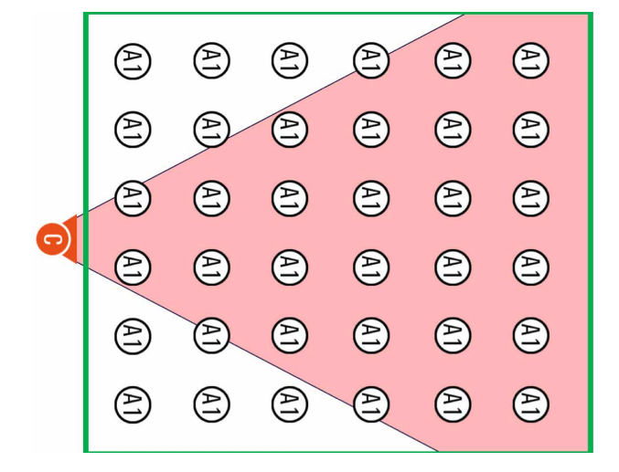
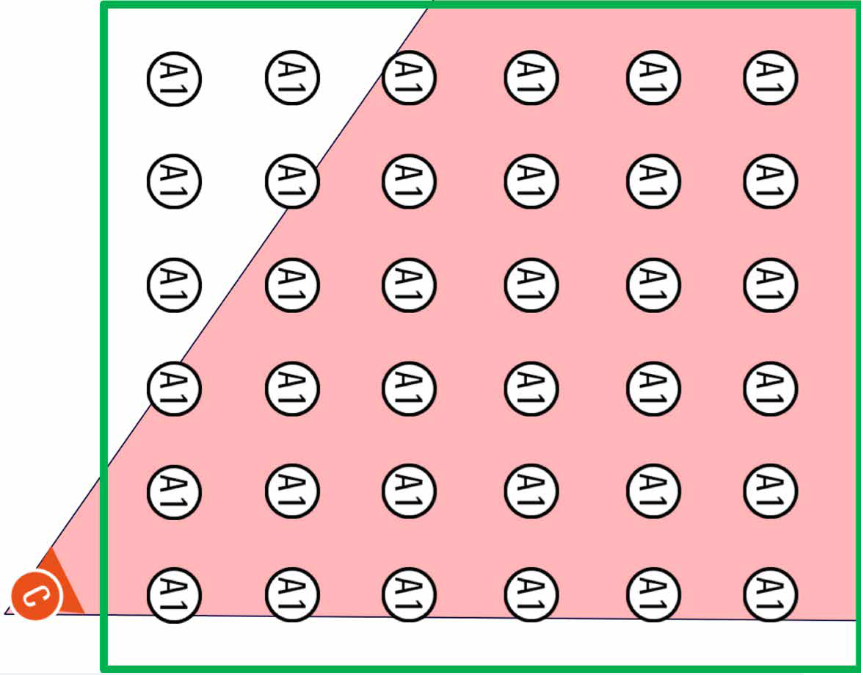

2.5 POSITIONING, OPEN ANGLE, AND ADJUSTMENTS
FIBA Referees Manual - Individual Officiating Techniques
EN
PL
Proper Positioning
Distance & Stationary

Distance & Stationary & Open Angle & Edge of the Play
